＜目次＞
1 ゲームをするために必要なPCスペック
1.1 普通のPCとゲーミングPCの違い
普通のPCとゲーミングPCの一番の違いはグラフィックボードの有無だ。 普通のPCのGPUはCPUに内蔵されているものが多いが、ゲーム用途だと性能が 足りないので、別にGPUを用意する必要がある。ゲームをする際には必須のパーツなので絶対に搭載してるものを買おう。
だがしかし中にはグラフィックボードがないノートpcでも遊べるFPSがある!!
詳しくはこちらのkrunker を参照してほしい。
またGeForce Nowのような月額制のクラウドゲームサービスを利用 することによって登録されているゲームをほぼスペックに関係なく遊ぶことができる。1.2 最低限ゲームができるスペック
今回はCPU、GPU、メモリに絞って説明します。その他のパーツはお好みだったり、 買う場所で大体勝手に決められているので心配は要らないと思います。 GPUのメーカーはこだわりが無ければどこでも良いです。今回は最低スペックということで、PC本体だけで10万円前後で購入できます。 CPUのメーカーは好みですが、最近だとAMDのRyzenのほうがコスパに優れるイメージです。グラフィックボードに関してはAMDもだしてはいますが、シェア率も低く、ハード的な性能は 余り変わらないのですが、ソフト面で不安が残るので、無難にGeforceのものを選ぶと良いです。
・CPU intel core i3 10100F または AMD Ryzen 3 3300X
・GPU GeForce GTX 1660 SUPER
・メモリ 8GB
があればゲーミングPCとして機能します。上記はなるべく安くゲームがしたい人にオススメです。 ですが、これだと不安という人向けにもうワンランク上のスペックを紹介しておきます。これならスペックにある程度余裕があり、下記のほうがオススメできます。 お金にあまり余裕がないけどしっかりゲームをしたい人にオススメです。
・CPU intel core i5 10400F または AMD Ryzen 5 3500
・GPU GeForce RTX 2060 SUPER
・メモリ 16GB
1.3 ガッツリゲームができる推奨スペック
下記の性能があればほぼすべてのゲームを快適に、またスペック面で余裕を持ってプレイできます。 お金に余裕があり、しっかりとゲームをしたいという人におすすめです。また、ゲームをするためならメモリは16GBで十分なので32GBにするくらいなら、他のパーツをアップグレードしよう。
・CPU intel core i7 10700F または AMD Ryzen 5 5600X
・GPU GeForce RTX 3070
・メモリ 16GB
1.4 どこでPCを買えばいいの？
BTO(Build to Order)を買うのがオススメです。BTOはあらかじめ決められている構成を 自分でアレンジして買うことができ、組み立ては不要です。大体のメーカーで手数料無しの分割払いができるので、すぐに用意する必要はありません。 いくつか人気メーカーを紹介して置きます。
・ドスパラ https://www.dospara.co.jp
・パソコン工房 https://www.pc-koubou.jp
・フロンティア https://www.frontier-direct.jp
・マウス https://www.mouse-jp.co.jp
・ツクモ https://shop.tsukumo.co.jp
中でもフロンティアの台数限定セール中がかなり安く買えるので、セールを待つのがオススメです。
2 周辺機器の選び方
2.1 モニター
リフレッシュレート144Hz以上、応答速度1ms以下、24インチ前後のものを選ぼう。
オススメのモニターはこちらです。
2.2 マウスとマウスパッド
マウスの持ち方や手の大きさによって握りやすいマウスは異なるので、 できるだけ店頭で実際に握ってから買おう。
持ち方は主に3つあり
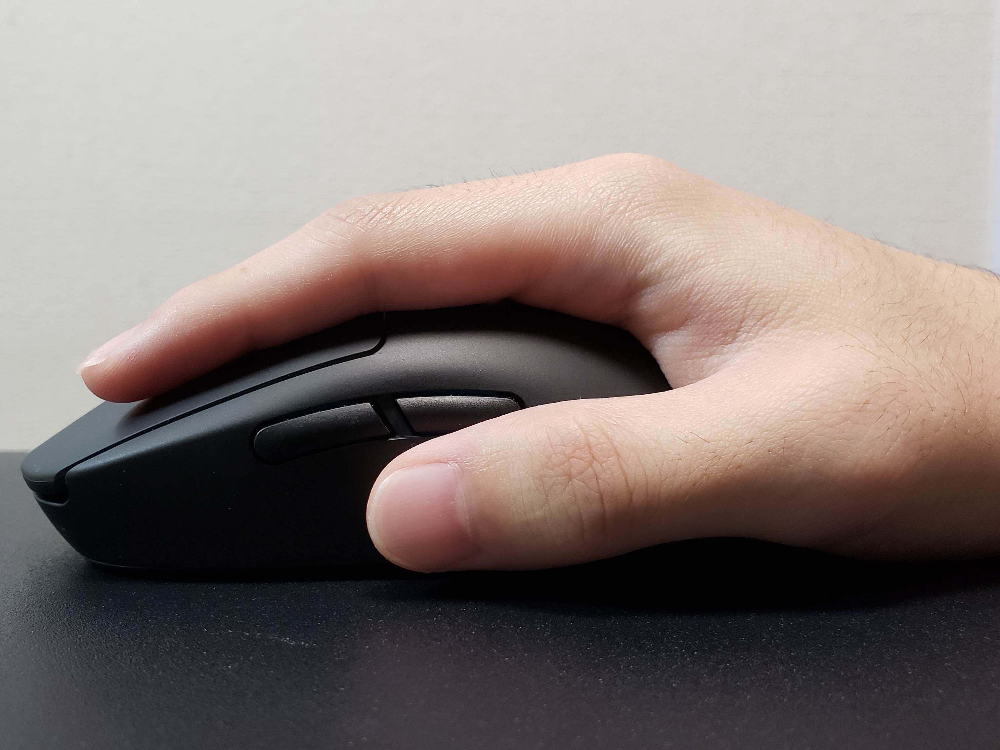
・「かぶせ持ち」手の平から指全体で持っている。
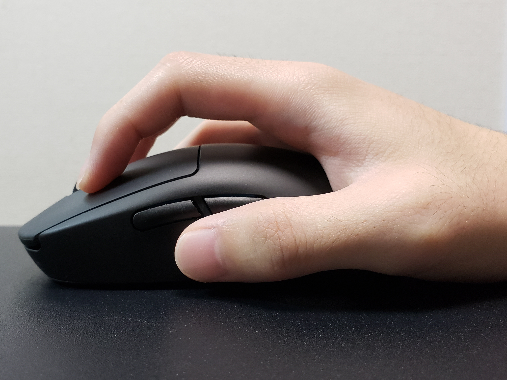
・「つかみ持ち」手の付け根と指先で持っている。
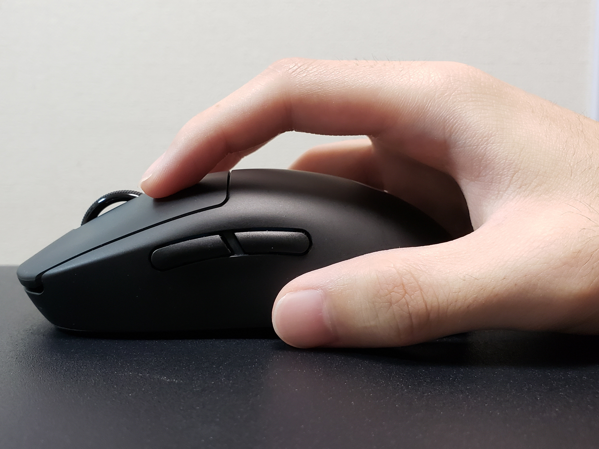
・「つまみ持ち」指先だけで持っている。
がある。だからと言って何を買えば良いかわからないと思うので、 人気でコスパが良いマウスを紹介します。
マウスパッドに関してはある程度大きいほうが良いです。オススメのマウスパッドはこちらです。
2.3 キーボード
キーボードにはメンブレン式、メカニカル式、静電容量無接点式がある。 ゲームをやる場合はメカニカル式がを使うことが多いので、 メカニカルキーボードを選ぶと良い。メカニカルキーボードには色々な軸がある。軸というのはキーボードのスイッチ部分のことで、軸を変えることによって、 音やうち心地などが変わってくる。 青軸、茶軸、赤軸の3つの使用率が高いので特性をまとめた。
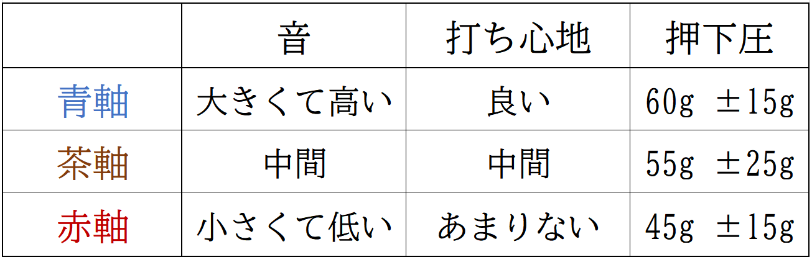
青軸はうるさいので家族やフレンドに迷惑をかける可能性があるのでなるべく避けよう。 それに加えて、ゲームをするにはテンキーは邪魔になるのでテンキーレスがオススメだ。 初心者にオススメなキーボードも紹介します。
2.4 オーディオ機器
オーディオ機器はヘッドセットを使うか、イヤホンとマイクを使うか2つ選択肢がある。 ヘッドセットの方が安く済むが、髪の毛に痕がついてしまうのが欠点だ。 入門のイヤホン、マイクとヘッドセットをそれぞれ紹介します。
3 PCの設定
3.1 ドライバとツール
今回はNvidiaのグラフィックボードに絞って紹介します。 まずPCを買ったら Geforce Experience をインストールしよう。 そしたら各種ドライバをインストールできる。 インストールできたらGeforce experienceを起動して設定をしよう。
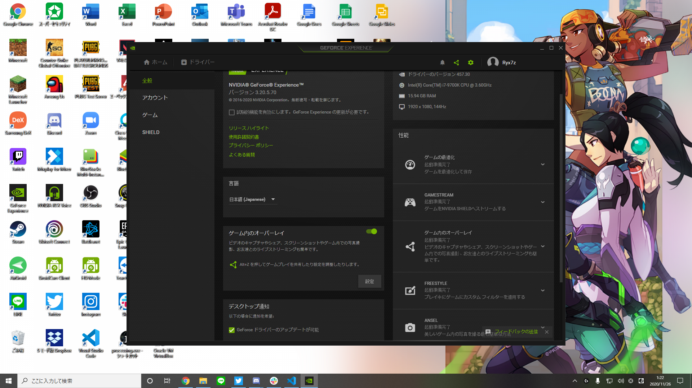
まず欠かせないのはゲームオーバーレイだ。ここを忘れずにオンにし、 ALT+Zを押してさらにその設定をみてみよう。
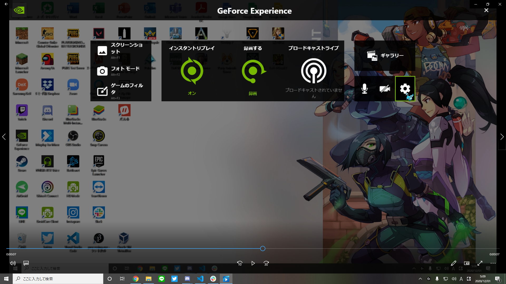
HUDレイアウトでは皆の憧れFPSカウンターの表示ができたり、 録画した際の保存先の設定などができるので、HDDなどに変えると良いです。 好きなように設定しよう。特にこだわりが無ければ初期の状態で大丈夫だ。設定を閉じたら忘れずにインスタントリプレイの設定をしてオンにしよう。 この機能はかなり便利でオンにしておいて、ALT+F10を押すことにより、数分前から現在までの画面を録画できる神機能だ。設定ではこの分数を変えるだけであとはそのまま で良いです。簡単に使い方を説明すると、良いキルシーンが出た時に録画してなかったとしても、この機能を使えば保存ができちゃうのだ。なのでキルクリップ集めでもう常時録画を回す必要 が無いのだ。もちろん、ALT+F9(初期設定)を押せば手動で録画の開始/停止もできる。
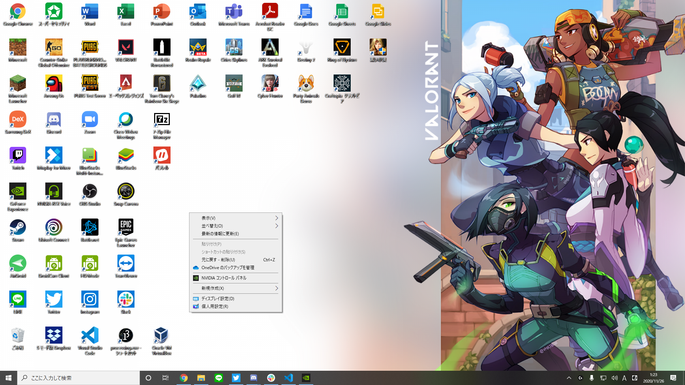
次に、デスクトップに戻り何もないところで右クリックしたら「コントロールパネル」があるので 開こう。ここに関してはプラスアルファなのでそのままでも良い。
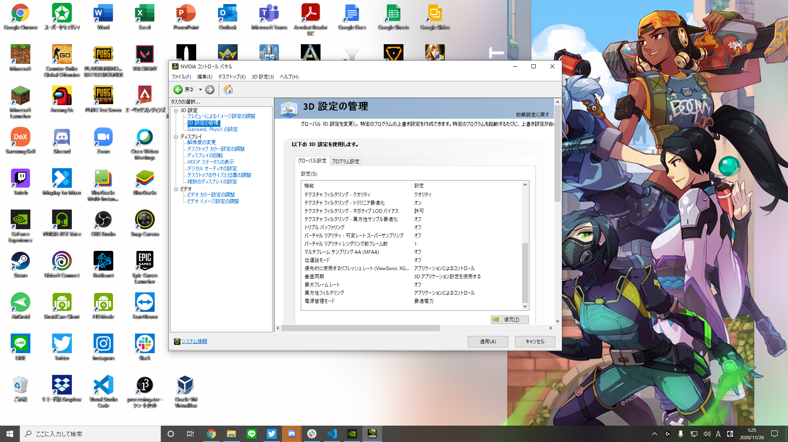
まずはプレビューによるイメージ設定の調整から。マイプレファレンスを使用に切り替えて デフォルトをパフォーマンスに動かすとよりフレームレートが上がる。
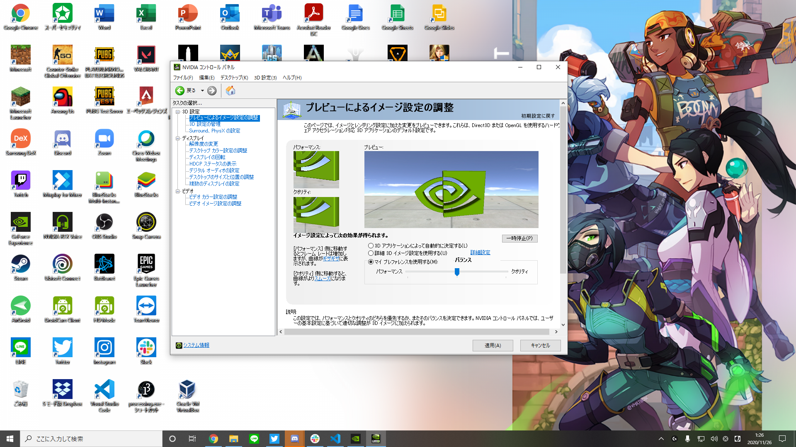
次に3D設定の管理をかえよう。ここではグローバル設定だけ弄ることにする。 低遅延モードをウルトラに、垂直同期をオフに、最大フレームレートをお手元のモニターと同じ数値に、異方性フィルタリングをオフに、電源管理モードをパフォーマンス最大化に 変更すればOKだ。
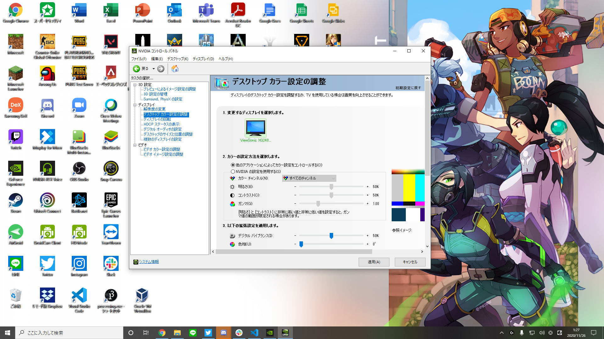
最後にデスクトップカラー設定の調整で画面の彩度などをお好みで変えてみよう。 筆者はデジタルバイブランスだけ80%に設定している。また、引き伸ばし※をしたい場合はコントロールパネルの解像度の変更からカスタマイズで 解像度を追加すれば可能だ。
※引き伸ばしとは、本来3:4などの画面比を無理やり16:9に横伸ばしにすることで 敵を太くし、弾を当てやすくする手法でPUBGやCSGOなどでよく使われる。
3.2 各デバイス
RazerやLogicoolではデバイスを管理できるソフトウェアが存在する。 (RazerならRazer Synapse、LogocoolならG Hub)これらではデバイスの光り方、各キー、ボタン割り当てやdpiを 変えることができるのでなるべくいれよう。ただこれらのソフトウェアには 不具合が起きることが多いので、もし不具合が起きたら消すもの選択肢の1つだ。
4 FPS全般に必要な知識と技術
4.1 FPSで多く使われる用語
こちらを参照してください。
4.2 ゲームをインストールするプラットフォーム
ゲームをインストールする際は、ホームページからそのままダウンロードできるものも あるがほとんどがプラットフォームを介してダウンロードする。言わば、Google Playや AppStoreのようなものだ。その中でもよくつかわれるものを紹介するのであらかじめダウンロード しておくのが良い。
・Steam https://store.steampowered.com/?l=japanese
・Epic Games https://www.epicgames.com/site/ko/home?lang=ja
・Origin https://www.origin.com/jpn/ja-jp/store
・Blizzard https://www.blizzard.com/ja-jp/
・Ubusoft https://store.ubi.com/jp/home
4.3 感度とエイムについて
FPSをやる上で一番大切なのが感度だ。ゲームごとに数値は異なるが このサイトで振り向きを計算できる。振り向きというのはマウスを何cm動かしたら ゲーム内で180度視点移動するかを示したものだ。一般的に15cm未満は高感度、15cm～25cmが中感度、それより大きくなると低感度になる。 一般的に感度はセンシ(センシビリティの略)と呼ばれ高感度、中感度、低感度の順にハイセンシ、ミドルセンシ、ローセンシと呼ばれる。 各ゲームごとに振り向きを変えるよりも上記のサイトで合わせてなるべく同じにすることがオススメだ。ゲームによってハイセンシがよいかローセンシが良いか変わるが、ミドルセンシは すべてのゲームで使いやすいため、オススメだ。次にエイムについてだ。エイムは基礎体力みたいなもので毎日練習するとどんどんよくなる。 またエイムと同様にリコイルコントロール(銃の反動制御)も非常に大切な技術であるが、ゲームごとに違うので今回は省かさせてもらう。 各自好きなゲーム、銃をトレーニングモードで試し撃ちしまくって練習してほしい。 リコイルコントロールはとにかく数をこなすことが重要である。今回はValorantの射撃練習場でのBot撃ち機能を利用してオススメのエイム練習方法を紹介するが大前提として、上手くなりたいゲームがあるならできるだけそのゲームで練習したほうが良い。
(Valorantについてはこちら)
まずプラクティスモードに入ったら射撃訓練に照準を合わせて発射すると、Botが出現する。
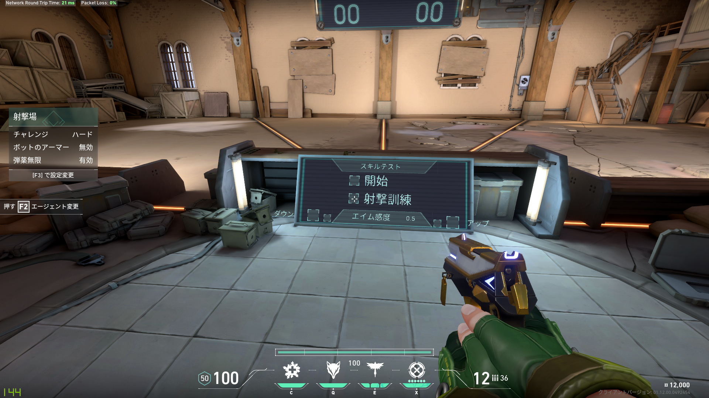 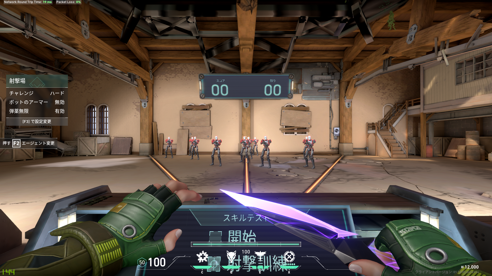
そしてこのBotを左から順に倒していく。一番右までいったら一番左に戻るの繰り返しをする。 それが終わったら今度は逆に右から左、というように倒していく。それをそれぞれ10分程度毎日やれば上達が早くなること間違いなしだ。 注意点としてBotを倒すときは頭を狙おう。また、Bot撃ちする際の銃はゴースト、ファントム、ヴァンダルのどれかを使おう。これらはあたまに当てれば1撃で倒せる。 そしてなにより重視すべきは、なるべくはやく撃つよりも確実に1発で倒そう。 はやく撃とうとして外すのはなるべくないようにしよう。また、このような感じでbot撃ち以外にも移動しながら同じ点に照準を合わせる練習もしよう。
4.5 チームでプレイする際のマナー
FPSはソロでプレイする場合もあるがチーム戦形式のものも多く、フレンドと 通話しながらプレイする場面もあるだろう。 そこで初心者が意図せずチームメイトを不快にさせてしまうことがある。そのためあらかじめ注意すべきことを紹介する。
1 VCにノイズをのせないようにしよう。
キーボードのタイプ音はプレイの集中を 妨害する可能性があるのでRTX voice(RTXのグラフィックボードで使用可能)や通話アプリの 機能でノイズキャンセリングを使おう。
2 報告をしっかりしよう。
自分が今持ってる物資や体力、敵の体力をどの程度削ったか、敵の位置など 自分だけしかわからないことはなるべく少なくしよう。 報告で大事なのは短く簡潔に述べることだ。
3 雰囲気が悪くなるような発言は避けよう。
FPSをやっているとチームが劣勢の時や理不尽な倒され方、味方の戦犯などイライラ要素は 他のゲームに比べてかなり多い。ですがそこでマイナス発言をしてしまうと全体の雰囲気が険悪になりゲームがつまらなくなってしまうので要注意だ。
4.6 通話ツールDiscordについて
ゲーマーの間では通話はほぼDiscordが使われている。他の通話アプリと大きく異なるのは、 個人個人で音量設定ができたり、連携しているゲームが数多く存在する点だ。例えば、今通話している人で1人だけ音が大きいとする。ほかのアプリでは全員の音を下げる 必要がある。それがそれがDiscordではその人だけ下げれる。また、ゲームをしている時に通話している人一覧のオーバーレイの表示(デフォルトでは左上) ができ、喋ると光って今誰がしゃべっているかわかる。 ユーザー設定の入力感度を調整して声だけが入る場所を見つけよう。
Discordはこちらからインストールできる。